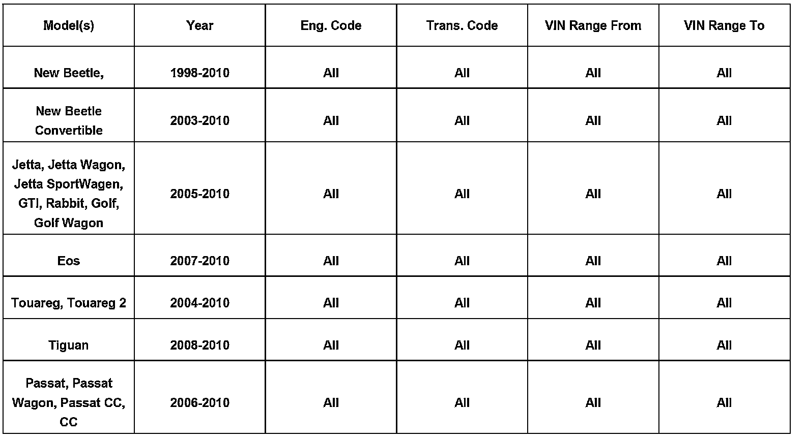
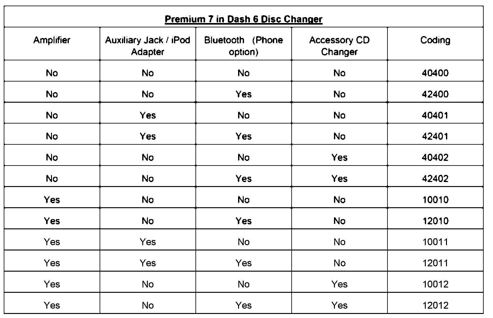
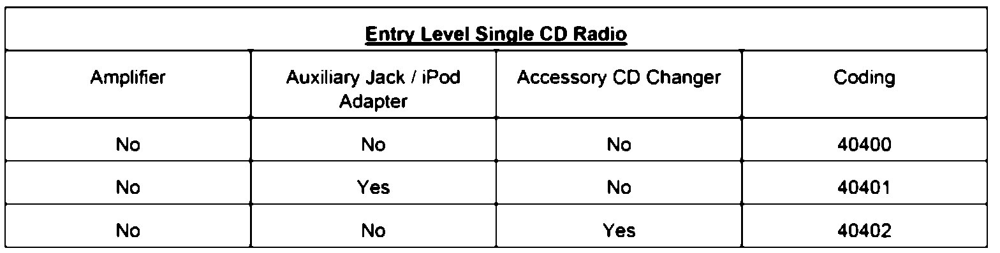
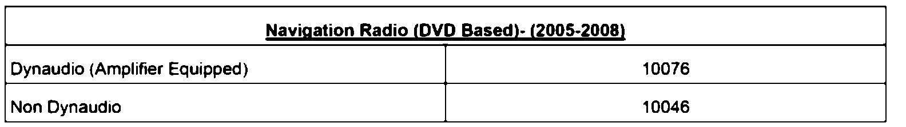
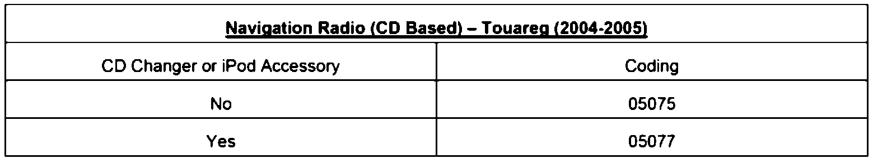
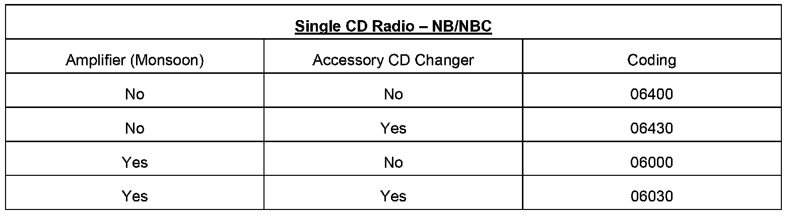
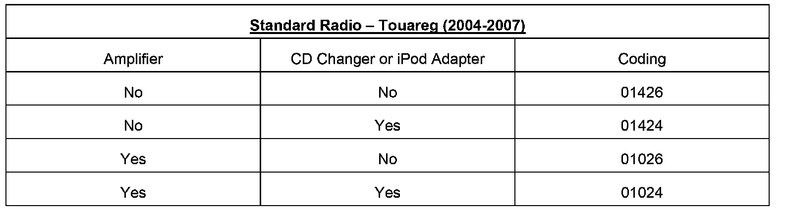
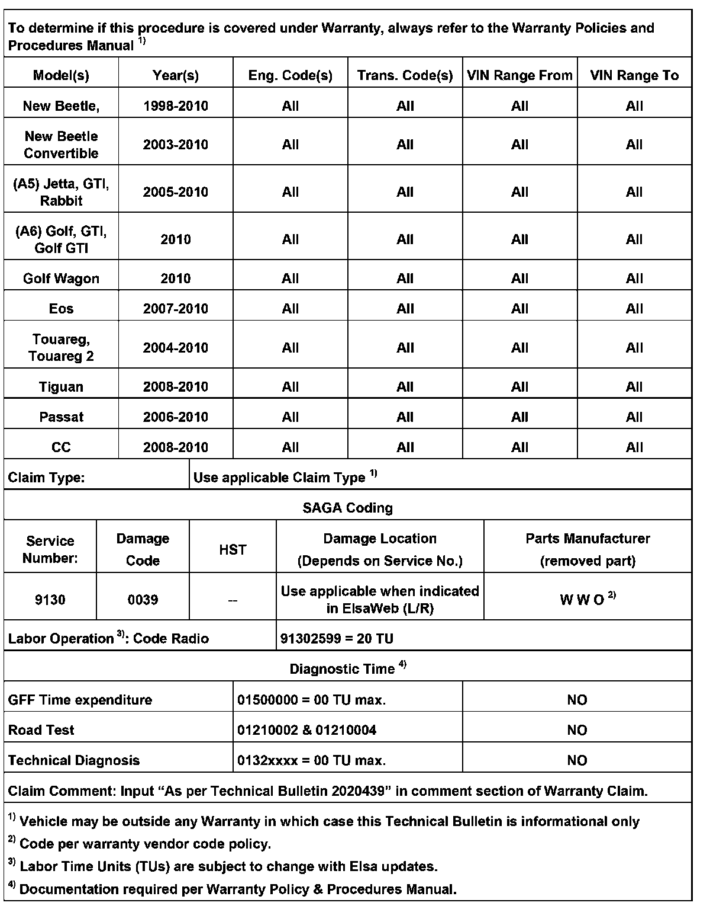

Audio System - Auxiliary Jack/iPod(R)/CD Changer Inop.
91 09 21Sept. 8, 2009
2020439 Supersedes T.B. Group 91 number 09-16 dated June 25, 2009 to update Premium 7 radio coding table.

Vehicle Information
Condition
Radio Coding - Auxiliary Jack, iPod, External CD Changer Inop after Radio Replacement
Auxiliary Jack, iPod, or CD changer is inoperative.
Technical Background
The radio is coded incorrectly following a radio / navigation radio replacement.
Production Solution
Guided Fault Finding test plan change pending.
Service
Procedure
1. Determine coding based on tables below.
2. Connect VAS tester.
3. Select Vehicle Self-Diagnosis.
4. Select On Board Diagnostic (OBD).
5. Select 56 - Radio or if a navigation unit 37 - Navigation.
6. Select 007 - Coding (Service $1A).
7. Enter the coding and select "Q" to confirm.
8. Exit Vehicle Self - Diagnosis.
9. Confirm operation of component.
NOTE:
1K00051510A accessory iPod adapter does not involve any coding change.
TIP:
- Only one accessory (Auxiliary jack, iPod adapter, or CD changer) can be equipped with Premium 7 in Dash 6 Disc Changer radio.
- Phone must be activated regardless if it is factory or accessory installed.

TIP:
Only one accessory (Auxiliary jack, iPod adapter, or CD changer) can be equipped with Entry Level Single CD radio.





TIP:
No iPod adapter is available for Standard Radio - Touareg 2 (2008-2009) radio.
Warranty
NOTE:
Only claim this labor operation for non radio replacement issues.

Required Parts and Tools
No Special Parts required.
Additional Information
All part and service references provided in this Technical Bulletin are subject to change and/or removal. Always check with your Parts Dept. for the latest information.